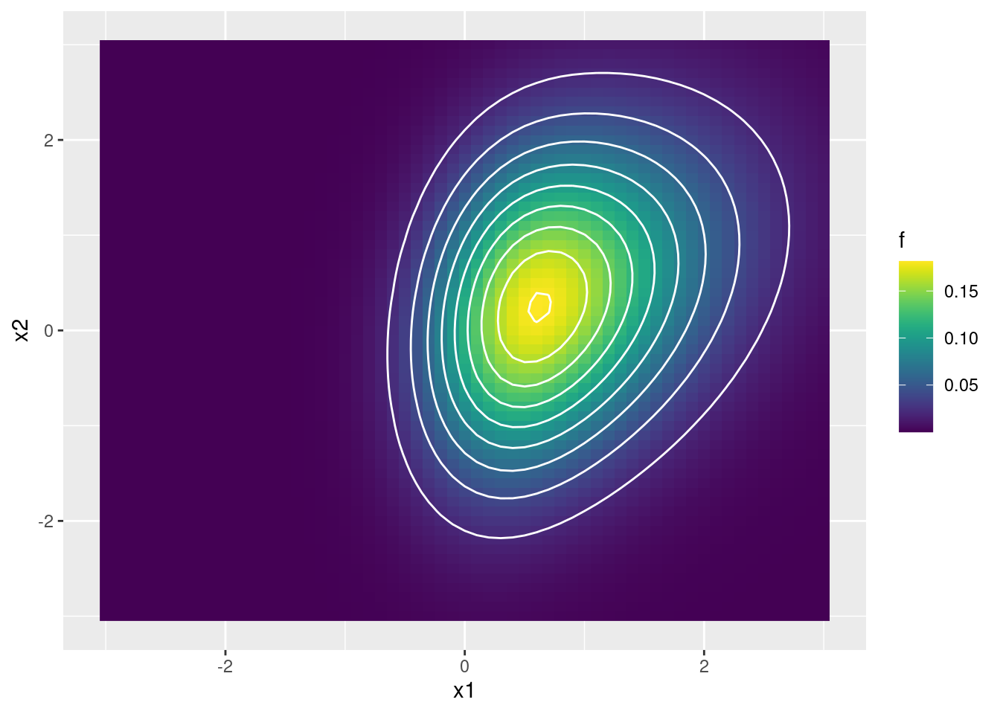

TP2: Implementación del algoritmo de Metropolis-Hastings
Metropolis-Hastings en 1D
El algoritmo de Metropolis-Hastings (MH) permite generar muestras (pseudo-)aleatorias a partir de una distribución de probabilidad \(P\) que no necesariamente pertence a una familia de distribuciones conocida. El único requisito es que se pueda evaluar la función de densidad (o de masa de probabilidad) \(p^*(\theta)\) en cualquier valor de \(\theta\), incluso cuando \(p^*(\theta)\) sea impropia (es decir, incluso aunque sea desconocida la constante de normalización que hace que la integral en el soporte de la función sea igual a uno).
Escriba una función que implemente el algoritmo de MH para tomar muestras de una distribución de probabilidad unidimensional a partir de su función de densidad. Separe en funciones cada uno de los pasos del algoritmo. Otorgue flexibilidad al algoritmo permitiendo elegir diferentes puntos de inicio y diferentes distribuciones de propuesta de transición: normal de una varianza dada y beta de una determinada moda y concentración (es decir, utilizando esta parametrización).
Utilizando la función propuesta, obtener 3000 muestras de la distribución dada por
\[ g^*(x) = \begin{cases} x^4 e^{-x} & \text{si } x \geq 0 \\ 0 & \text{si } x<0 \end{cases} \]
Compare las cadenas obtenidas al utilizar diversas distribuciones de propuesta de transición: tres normales de varianzas diferentes y tres betas de concentraciones diferentes. Calcule la tasa de aceptación. Compare utilizando histogramas y funciones de autocorrelación (puede utilizar la función
acfo escribir una función propia). Para elegir el punto inicial del algoritmo de MH, grafique la función de densidad y busque un punto conveniente.Utilizando cada una de las seis cadenas anteriores, compute la media de la distribución, los percentiles 5 y 95, y la esperanza de \(\sqrt{X}\) sabiendo que \(X\) se distribuye según \(g^*(x)\)
Para cada uno de los seis casos anteriores, estime el tamaño efectivo de muestra (\(ESS\) o \(N_{eff}\)). Luego, estime el MCSE de los valores de \(\mathbb{E}(X)\) para cada caso.
Effective sample size (ESS)El número efectivo de muestras \(N_{eff}\) es el número de muestras independientes que tienen el mismo poder de estimación que \(S\) muestras correlacionadas.
Este valor puede aproximarse por:
\[N_{eff} = \frac{S}{1 + 2 \sum_{k=1}^\infty ACF(k)}\]
Notar que la suma infinita del denominador empieza en \(k=1\) (y no en \(k=0\), donde \(ACF(0)=1\)). Además, en la práctica, una regla para truncar la \(ACF\) es hacerlo a partir del primer \(k\) valor donde \(ACF(k)<0.05\) (Kruschke 2014, 184).
Montecarlo standard error (MCSE)Por el Teorema Central del Límite sabemos que, si \(\bar{X}_N\) es el promedio de \(N\) observaciones independientes e idénticamente distribuidas, entonces \(\sqrt{N}(\bar{X}_N-\mu)\) converge en distribución a \(\mathcal{N}(0,\sigma^2)\) cuando \(N\) tiende a infinito, donde \(\mu\) es la media de la distribución de las \(X_i\) y \(\sigma\) es su desvío estándar. Si \(\sigma\) se estima por \(\hat{\sigma}\), el término \(\frac{\sigma}{\sqrt{N}}\) se conoce como error estándar.
Cuando se realiza integración por Montecarlo y se estima \(\mathbb{E}{X}\) con \(N_{eff}\) muestras dependientes que se comportan como \(N\) muestras independientes, el error estándar se aproxima por: \[MCSE = \frac{\hat{\sigma}}{\sqrt{N_{eff}}}\]
Para cada uno de los casos anteriores de distribución propuesta, obtenga cinco cadenas que partan de diferentes puntos iniciales. Estudie gráficamente la convergencia y, en caso de ser necesario, descarte muetras iniciales. Calcule el estadístico de Gelman-Rubin \(\hat{R}\)
Elija la mejor distribución de probabilidad para transiciones que le permita tomar muestras de la función de densidad:
\[ h^*(x) = e^{-\frac{4}{10} (x - \frac{4}{10})^2 - \frac{2}{25}x^4} \]
Considere un experimento binomial a partir del cual se quiere determinar la probabilidad de éxito \(\theta\). Se realiza el experimento se obtienen 6 éxitos en 10 intentos. Obtenga la distribución a posteriori de \(\theta\) si la creencia a priori viene dada por
\[ p(\theta) = 2 \theta \qquad \theta \in [0,1] \]
Metropolis-Hastings en 2D
Se desean tomar muestras de una normal bivariada asimétrica cuya función de densidad viene dada por
\[ f(\mathbf{x}) = 2\ \phi_2(\mathbf{x} \mid \mathbf{0}, \pmb{\Omega}) \ \Phi(\pmb{\alpha}^T\mathbf{x}) \qquad \mathbf{x} \in \mathbb{R}^2 \]
siendo \(\phi_2(\mathbf{x}\mid\mathbf{0},\mathbf{\Omega})\) la función de densidad de la normal bivariada de media \(\mathbf{0}\) y matriz de covarianza \(\mathbf{\Omega}\), \(\Phi(\pmb{\alpha}^T\mathbf{x})\) es la función de probabilidad acumulada de la normal estándar \(\mathcal{N}(0,1)\) y \(\pmb{\alpha} \in \mathbb{R}^2\) es un vector de parámetros.
En este caso, se tiene:
\[ \mathbf{\Omega} = \begin{bmatrix}1.5 & 0.6 \\ 0.6 & 1.5 \end{bmatrix} \]
y
\[ \pmb{\alpha} = [2 \quad 0] \]
- Escriba una función que implemente el algoritmo de Metropolis-Hastings para tomar muestras de una función de probabilidad bivariada dada. Separe en funciones cada una de los pasos del algoritmo. La probabilidad de salto será normal bivariada de matriz de covarianza variable. Otorgue flexibilidad al algoritmo haciendo que reciba como argumento la matriz de covarianza de la probabilidad de transición.
Se utilizará una normal bivariada para proponer un salto en el algoritmo de Metropolis-Hastings (utilizar para ello la función rmvnorm del paquete {mvtnorm}. Se explorará el efecto de diferentes distribuciones de probabilidad para el salto, en función de diferentes matrices de covarianza \(\mathbf{\Sigma}\). Si se representa a \(\mathbf{\Sigma}\) de la siguiente manera
\[ \mathbf{\Sigma} = \begin{bmatrix} \sigma_1 & 0 \\ 0 & \sigma_2 \end{bmatrix} \begin{bmatrix} 1 & \rho \\ \rho & 1\end{bmatrix} \begin{bmatrix} \sigma_1 & 0 \\ 0 & \sigma_2 \end{bmatrix} \]
donde \(\sigma_i\) representa el desvío estándar de la componente \(i\) y \(\rho\) la correlación entre las variables \(X_1\) y \(X_2\), entonces se deberán ensayar los siguientes casos:
- \(\sigma_1 = \sigma_2\) y \(\rho = 0\)
- \(\sigma_1 > \sigma_2\) y \(\rho = 0\)
- \(\sigma_1 < \sigma_2\) y \(\rho = 0\)
- \(\sigma_1 = \sigma_2\) y \(\rho > 0\)
- \(\sigma_1 = \sigma_2\) y \(\rho < 0\)
- Para al menos dos de los cinco casos anteriores, comparar las trayectorias seguidas por las cadenas al obtener muestras de \(f(x)\).
Referencias
Kruschke, John. 2014. Doing Bayesian Data Analysis: A Tutorial with R, JAGS, and Stan. 2nd edition. Academic Press.